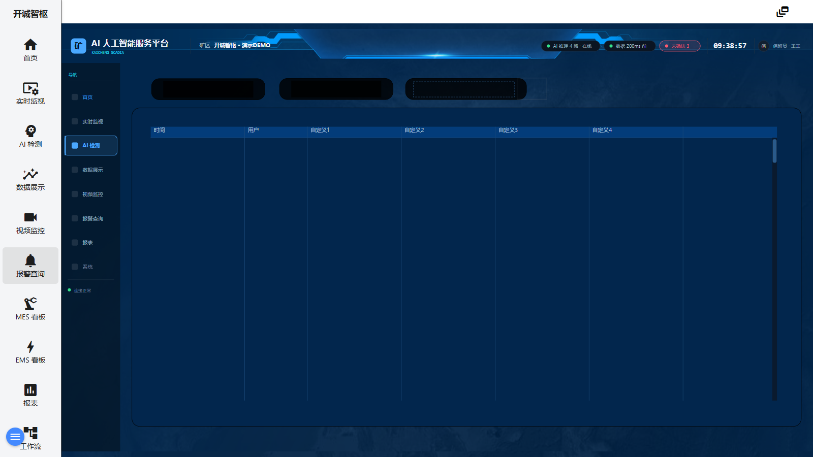

6. 报警查询
入口一：左侧菜单「报警查询」（工程画面 v_zc_g5） · 入口二：页眉铃铛（首页内嵌报警面板） · 入口三：实时报警页 /alarms 与报警定义页 /messages
功能概述
报警体系分三层：工程画面「报警查询」（v_zc_g5）以表格形式呈现报警历史记录；内置报警面板/实时报警页提供活动报警的实时列表、单条/全部确认（ACK）与按日期范围的历史查询；报警定义页（/messages「警报器设置」）用于配置报警规则（高高/高/低/信息阈值、延迟、Ack 模式等）。三者配合完成“查看—确认—追溯—配置”的闭环。
界面说明

图 6-1 报警查询画面（当前交付版实际截图）
工程画面（v_zc_g5）
| 区域 | 说明 |
|---|
| ① 报警历史表 | 画面主体的记录表格，表头列为：时间、用户、自定义1、自定义2、自定义3、自定义4，每行为一条报警/操作记录。 |
| ② 画面内导航 | 同第 1 章④，可点击切换到 AI 检测 / 数据展示 / 视频监控画面。 |
内置报警面板（首页铃铛展开 / 实时报警页 /alarms）
| 区域 | 说明 |
|---|
| ③ 标题栏 | 面板标题「警报」（查看历史时显示「历史报警」），右侧有展开/收起按钮（面板内使用时）。 |
| ④ 报警表 | 列：日期/时间、文本、优先级、组、状态、关闭日期/时间、ACK日期/时间、ACK用户；行文字按报警级别着色；点击列头可排序。 |
| ⑤ ACK 操作 | 每行右侧圆形勾选按钮确认单条报警（需确认的行才可用）；表头 ACK 列的勾选按钮一次确认所有警报。 |
| ⑥ 查询菜单 | 表头右侧 ⋮ 菜单：「警报」回到当前活动报警；「历史警报」弹出日期范围选择器，按时间段查询历史记录。 |
报警定义页（/messages「警报器设置」）
| 区域 | 说明 |
|---|
| ⑦ 定义列表 | 列：名称、设备/变量、高高、高、低、信息、行动；左上 + 新建，行内 ✎ 编辑，行尾清除删除。 |
| ⑧ 导入/导出 | 表头 ⋮ 菜单提供报警导入与「Export Alarms (JSON)」导出，便于批量迁移。 |
| ⑨ 报警属性 | 编辑对话框字段：名称、授权、高高/高/低/信息阈值与文本、行动、启用、最小/最大、时间延迟（秒）、检查间隔（秒）、类型、Ack 模式（浮动 / 允许主动报警的 Ack / 只允许由被动报警器进行 Ack）、组。 |
逐步操作
查看工程画面报警历史
- 点击左侧菜单「报警查询」，进入报警查询画面。
- 在①区表格中按「时间」列浏览历史记录；「用户」列记录相关操作账号。
确认（ACK）一条活动报警
- 在首页点击页眉铃铛，底部展开报警面板（计数随之清零）。
- 找到目标行，点击该行 ACK 列的圆形勾选按钮；该行「ACK日期/时间」「ACK用户」随即填入。
- 需要一次处理全部：点击表头 ACK 列的勾选按钮，确认所有警报。
按日期范围查询历史报警
- 在报警面板（或 /alarms 页）点击表头右侧 ⋮ 菜单。
- 选择「历史警报」，在弹出的日期范围对话框中设定开始/结束日期。
- 确认后表格切换为「历史报警」标题，列出该时段的报警记录；再点 ⋮ →「警报」回到实时列表。
新建一条报警规则
- 进入 /messages（系统类页面「设置」对话框 → 「警报」，或直接访问
http://127.0.0.1:1881/messages）。
- 点击左上 + 按钮，打开报警属性对话框。
- 填写名称，选择设备/变量，设置阈值（如「高」=80、「低」=20），填写报警文本与组。
- 按需设置时间延迟、检查间隔与 Ack 模式，勾选「已启用」，保存。
- 回到首页，触发条件满足时铃铛角标即出现计数。
提示与常见问题
- ACK 按钮是灰的？ 该行已确认过，或报警处于不允许 Ack 的模式（见报警属性的 Ack 模式设置）。
- 铃铛角标数字不消失？ 角标统计的是未确认报警数，需在报警面板完成 ACK 后归零。
- 历史查询没有数据？ 历史报警按服务端保留策略存储（默认保留 1 年）；确认日期范围包含发生过报警的时段。
- 工程画面的「自定义1～4」列是什么？ 演示画面预留的扩展列，接入真实系统后可组态映射具体字段。
- 报警发不出邮件？ 邮件通知属「通知」功能（第 11 章），需在设置中配置 SMTP 并新建通知规则。
← 上一章 · 返回目录 · 下一章 →